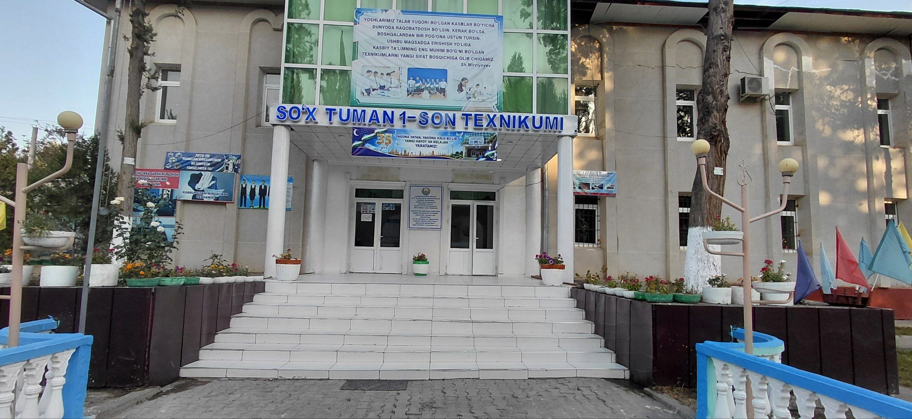

tajriba
Kelajak uchun zamonaviy ta'lim
1-son Texnikumi — yoshlarni zamonaviy kasblarga tayyorlash, ularga sifatli bilim va amaliy ko‘nikmalar berishga ixtisoslashgan ta’lim muassasasidir.
Biz o‘quvchilarni mustaqil fikrlash, zamonaviy texnologiyalardan foydalanish va kelajakdagi kasbiy faoliyatga tayyorlashga e’tibor qaratamiz.
Nima uchun biz?
O‘quvchilarimiz uchun sifatli ta’lim, amaliy tajriba va zamonaviy imkoniyatlar yaratishga intilamiz.
Sifatli ta’lim
O‘quvchilarga zamonaviy ta’lim usullari asosida bilim beramiz.
Innovatsiya
Zamonaviy texnologiyalar va yangi ta’lim usullaridan foydalanamiz.
Hamkorlik
O‘quvchi, ustoz va ota-onalar bilan hamkorlikda ishlaymiz.
Kelajak kasblari
Yoshlarni zamonaviy va talab yuqori bo‘lgan kasblarga tayyorlaymiz.
Har bir yoshga yangi imkoniyat
Bizning asosiy maqsadimiz — yoshlarni zamonaviy bilim va amaliy ko‘nikmalar bilan ta’minlash hamda ularni kelajak kasbiga tayyorlash.
Nazariy bilim bilan bir qatorda amaliy mashg‘ulotlarga ham alohida e’tibor qaratamiz.
Bilim
Mustahkam nazariy bilim olish.
Ko‘nikma
Amaliy tajriba va ko‘nikmalarni rivojlantirish.
Kelajak
Kasbiy faoliyatga tayyorlanish.
O‘quvchilar uchun imkoniyatlar
Amaliy mashg‘ulotlar
Olingan bilimlarni amaliy mashg‘ulotlar orqali mustahkamlash.
Zamonaviy texnika
Zamonaviy texnologiyalar va jihozlar bilan ishlash imkoniyati.
Malakali ustozlar
Tajribali mutaxassislardan bilim va amaliy ko‘nikmalar olish.
Kasbiy rivojlanish
Kelajakdagi kasbiy faoliyat uchun zarur ko‘nikmalarni shakllantirish.
O‘zingizga mos yo‘nalishni tanlang
1-son Texnikumida zamonaviy kasblarni o‘rganing va kelajak uchun mustahkam bilim hamda ko‘nikmalarga ega bo‘ling.